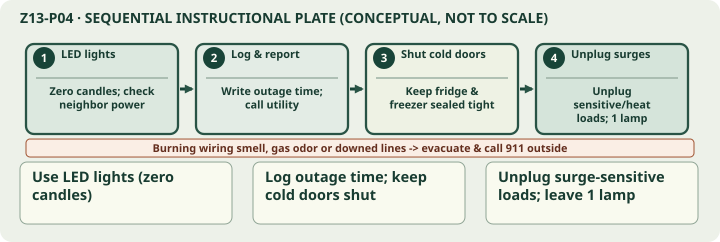

Z13-P04 · Home survival and utilities · New manuscript
Execute safe first-hour stabilization when residential power fails
Prevent house fires, carbon monoxide exposure, food warming, and electrical surge damage during the chaotic first hour of a blackout.
When it applies · Sudden residential electrical outage caused by storms, grid faults, or equipment failures.
Equipment · Battery LED flashlights/headlamps, NOAA Weather Radio, appliance thermometers, and paper outage log.

Actions
- Switch immediately to battery LED flashlights or lanterns—never candles—check whether neighbors also lost power, and report the outage to your utility via phone or outage line.[U01, U04, U16]
- Record the exact power-loss clock time on paper, keep refrigerator and freezer doors closed to preserve cold air, and verify battery-backed CO and smoke alarms are operating.[F04, U12, U01]
- Turn off or unplug sensitive electronics and high-draw heating/cooling appliances (leaving one single interior lamp switched on as a restoration indicator) to prevent overload or voltage-spike damage when power returns.[U01]
Failure recognition · Lighting open-flame candles near curtains while opening the refrigerator repeatedly to see what is inside.[U04, F04]
Verify · Confirm outage time is logged, candles are absent, fridge/freezer doors remain closed, and sensitive loads are unplugged.[U01, F04, U04]
Stop or change course · Smell of burning wiring, sizzling electrical panels, gas odors, or downed lines outside requires immediate evacuation and calling 911/utility from outside.[U11, U04, D04]
Evidence and editorial notes
- D04 · FEMA / Ready.gov · Thunderstorms and Lightning (current web edition)
- Section: Severe Thunderstorms, Straight-Line Winds, Hail, and Lightning · Conditions: Severe Thunderstorm Warnings, derechos, and electrical storms
Support: Move indoors to a substantial building immediately when thunder is heard or severe wind warnings issue; stay away from windows, corded appliances, and plumbing during lightning, and avoid downed limbs and energized downed lines after derechos.
Limitations: Straight-line derecho winds can rival tornado damage across hundreds of miles and cause multi-day regional power blackouts. · Conflicting evidence: None; integrates with E07 and E18.
Editorial note: Grounds severe-storm, hail, and straight-line wind response cards. · Specialist reviewer: Meteorology and utility safety
Primary source · checked 2026-11-24 - F04 · USDA / FDA / CDC · Food Safety During Power Outage (current web edition)
- Section: Refrigerated food and power outages · Conditions: Refrigerator starts cold; keep door closed
Support: An unopened refrigerator keeps food cold for about four hours. Follow the per-item discard chart after loss of temperature control. Never taste to test.
Limitations: Door openings accelerate warming; appliance thermometer is needed to verify temperature. · Conflicting evidence: None; retained for Z15 reconstruction.
Editorial note: Maintains five-pack integrity. · Specialist reviewer: Food safety and household preparedness
Primary source · checked 2026-11-24 - U01 · FEMA / Ready.gov · Power Outages (current web edition)
- Section: Power Outages > Preparing and Responding Safely · Conditions: Residential utility electrical outages of hours to days
Support: Keep phones/medical batteries charged, maintain flashlights instead of candles, unplug sensitive appliances to protect against restoration surges, and verify backup power plans for electrically dependent medical devices.
Limitations: Home outage durations vary widely by grid damage; extended winter outages require heat/evacuation contingencies. · Conflicting evidence: None; aligns with CPSC and NFPA.
Editorial note: Establishes household outage baseline and medical-power priority in Z13. · Specialist reviewer: Emergency management and electrical safety
Primary source · checked 2026-11-24 - U04 · FEMA / Ready.gov · Home Fires (current web edition)
- Section: Home Fires > Smoke Alarms, Fire Extinguishers, and Escape Plans · Conditions: Residential fire prevention during outages and supplemental heating
Support: Test smoke alarms monthly on every level and outside sleeping areas, keep two exits clear from every room, store fuels outside living spaces in approved containers, and evacuate immediately if a fire exceeds incipient containment.
Limitations: Candles and improvised indoor flames dramatically elevate outage house-fire deaths. · Conflicting evidence: None; integrates with CPSC CO-alarm rules (C09).
Editorial note: Anchors outage fire prevention, fuel storage, and exit readiness in Z13. · Specialist reviewer: Fire prevention and residential safety
Primary source · checked 2026-11-24 - U11 · U.S. DOT PHMSA · Pipeline Leak Recognition and What to Do (Current web edition)
- Section: What to DO; What Not to Do · Conditions: Suspected gas or pipeline leak
Support: Leave the affected area and call 911 and the provider from safety. Avoid spark sources and leave valve and restoration decisions to authorized responders.
Limitations: Do not transpose outdoor hazmat sheltering directions to a gas leak inside the dwelling. · Conflicting evidence: See A02 claim audit for boundaries.
Editorial note: Establishes strict utility-leak evacuation and licensed restoration gates. · Specialist reviewer: Gas utility safety and fire service
Primary source · checked 2026-11-25 - U12 · CPSC · CO Alarms (current web edition)
- Section: Home Alarms > Smoke, Carbon Monoxide, and Battery Backup Readiness · Conditions: Occupied residences with fuel-burning furnaces, water heaters, attached garages, or outage generators
Support: Maintain interconnected or battery-backed CO and smoke alarms on every floor and outside sleeping rooms, replace expired sensors on schedule, and keep exterior furnace/dryer/exhaust vents clear of drifting snow.
Limitations: Blocked high-efficiency PVC furnace intake/exhaust pipes in heavy snow can force CO back indoors or lock out heating systems. · Conflicting evidence: None; integrates with C09 and Z13-R03.
Editorial note: Connects winter snow-drift vent inspection to household CO prevention. · Specialist reviewer: Carbon monoxide safety and residential HVAC
Primary source · checked 2026-11-24 - U16 · FEMA / Ready.gov · Emergency Alerts (current web edition)
- Section: Household Emergency Communications During Grid and Cell Outages · Conditions: Residential power, internet, and cellular tower disruptions
Support: Maintain a battery/crank NOAA Weather Radio, spare power banks, car-charger backups, written contact cards, and local AM/FM broadcast station lists so warnings and utility restoration updates remain accessible without Wi-Fi or cell data.
Limitations: Cordless landline handsets and VoIP routers fail immediately when house power drops unless separately backed up. · Conflicting evidence: None; links Z13 household comms to Z15 disaster alerts.
Editorial note: Grounds home communications continuity during extended blackouts. · Specialist reviewer: Emergency communications specialist
Primary source · checked 2026-11-24
Source lineage · FEMA Ready.gov Power Outages; new manuscript · Classification · New manuscript.